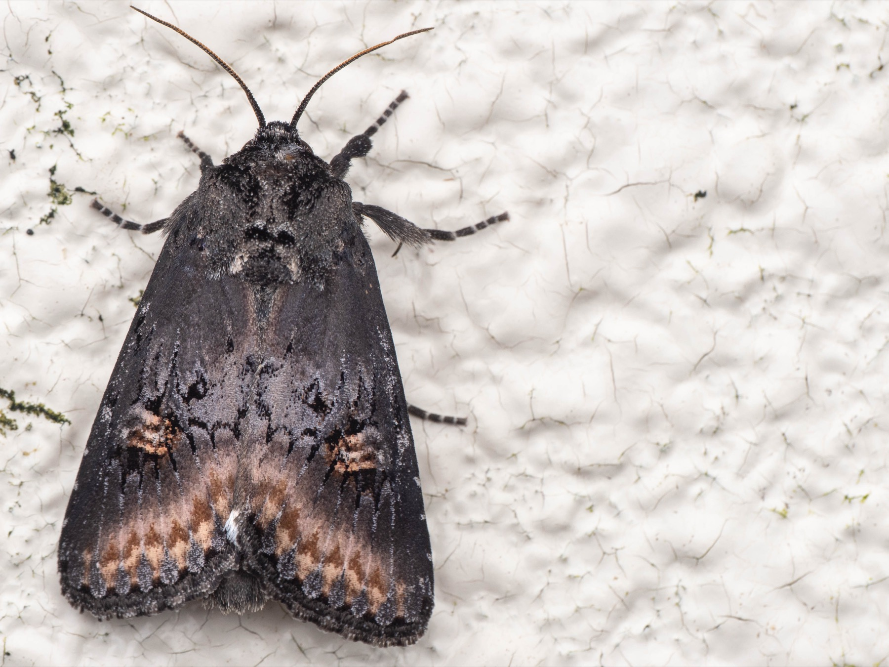

構造差を見る
光源は10W級ブラックライトに固定し、入口構造、捕獲部への導線、逃げにくさなど、トラップ構造の違いを比較します。

Protocol
今年度は、標準ライトトラップを決める前段階として、光源を10W級ブラックライトに固定し、入口構造や捕獲部の違いが、飛来から残留までの過程にどのような影響を与えるかを比較します。最終的な捕獲数だけでなく、飛来、入口接触、進入、逃出、残留、同定までを分けて記録し、どの段階で構造差が生じるのかを明らかにします。
今年度は光源比較ではなく、トラップ構造の比較に焦点を当てます。光源、点灯時間、設置条件、観察時刻をできるだけそろえたうえで、入口構造や捕獲部の違いが記録数と記録過程に与える影響を検証します。
光源は10W級ブラックライトに固定し、入口構造、捕獲部への導線、逃げにくさなど、トラップ構造の違いを比較します。
地点、点灯時間、光源の向き、設置高さ、観察間隔をできるだけ統一し、構造以外の要因で差が出にくいようにします。
最終的な捕獲数だけでなく、飛来、入口接触、進入、逃出、残留、同定を分けて記録し、構造差がどの段階で生じるかを見ます。
この試験では、光源を変えて蛾を多く集める方法を探すのではなく、同じ光源を使ったときに、どのトラップ構造が安定して記録しやすいかを比較します。
光源の向きや設置位置が構造ごとに変わると、構造差ではなく光源条件の差を見てしまう可能性があります。そのため、光源の向き、高さ、入口までの距離は、両構造でできるだけ共通化します。共通化できない点は、記録項目として残します。
| 区分 | 今年度の扱い | 注意点 |
|---|---|---|
| 光源 | 10W級ブラックライトに固定 | 光源比較は今年度の主目的にしません。型番、波長表記、電圧、電流、ライトIDは記録します。 |
| 入口構造 | 比較対象 | 谷型入口、漏斗型、衝突板付き構造など、構造差が記録過程に与える影響を見ます。 |
| 光源の向き | 原則として共通化 | 構造ごとに光源の縦横や向きが変わると交絡するため、できるだけ同じ向き・高さ・距離にします。共通化できない場合は記録します。 |
| 設置位置 | 同一地点内で比較 | 微環境差を避けるため、位置を固定せず、日や地点でローテーションできる設計にします。 |
| 観察方法 | 人によるリアルタイム記録 | 飛来、入口接触、進入、逃出を同じ時間幅で記録します。観察者IDを残します。 |
| 回収方法 | 同じ時刻・同じ手順で回収 | 残留数、死亡・損傷、逃出、保存状態を記録します。 |
| 反復 | 複数日・複数地点で確保 | 短期の試作ではなく、日差・地点差を含めて構造差を評価します。 |
| 区分 | 項目 | 備考 |
|---|---|---|
| 調査イベント | event_id, site_id, date, observer_id, date_start, date_end, sunset_time, weather_note | 同じ日の同じ地点で構造間を比較するための基本情報です。 |
| トラップ条件 | trap_id, trap_type, entrance_type, baffle_type, funnel_type, container_type, trap_height, trap_spacing, light_id, light_type, light_orientation, distance_light_to_entrance | 今年度の主目的です。構造差と光源条件が混ざらないように記録します。 |
| 環境条件 | temperature, wind, cloud_cover, rainfall, moon_phase, surrounding_light, vegetation_note | 捕獲数や飛来数の補正、異常値の判断に使います。 |
| 時間別観察 | time_block, trap_id, flyby_count, entrance_contact_count, entry_count, escape_count, observer_id | 構造差が、飛来後のどの段階に出るかを見るために使います。 |
| 回収時記録 | retained_count, dead_count, damaged_count, missing_note, equipment_trouble, collection_time | 最終的に残った数と、途中で失われた可能性を確認します。 |
| 同定 | taxon_name, identification_level, identifier, confidence, photo_url, specimen_id, unidentified_reason | 種群・属止め・未同定の扱いを明示します。 |
| 管理 | public_flag, sensitive_species_flag, data_note | 公開可否、希少種情報、備考を管理します。 |
この試験では、最終的な捕獲数だけを比較しません。どの構造が、どの段階で差を生むのかを分けて見ます。
記録数 ≒ 飛来数 × 入口接触率 × 進入率 × 残留率 × 同定率
この分解により、あるトラップで記録数が少なかったときに、蛾が来なかったのか、入口に入らなかったのか、入っても逃げたのか、同定できなかったのかを区別できます。
今年度は、全国モニタリングの完成版を運用する段階ではありません。まず、長期的に使える標準トラップを決めるために、構造差を検証します。
これらは将来的な目標ですが、今年度はその前段階として、比較可能なトラップ構造を選ぶための試験を行います。